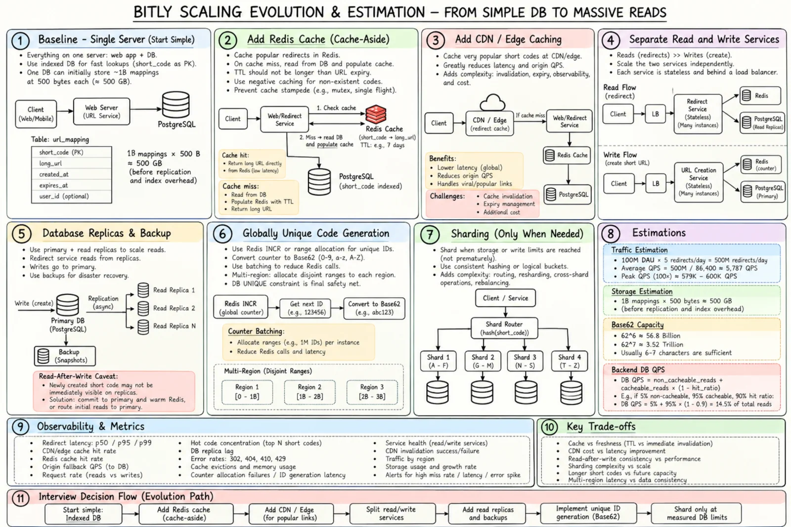

Topic · Scaling Reads: Bitly URL Shortener
Bitly Scaling and Estimation
The numbers that justify each step - and the frontend and backend optimizations that follow.


Quick Revision
- 1B mappings × ~500 B ≈ 500 GB - one well-run DB.
- 500M redirects/day ≈ 5.8K QPS avg; illustrative 100× peak ≈ 600K QPS.
- 95% cacheable, 99% hit → origin sees ~36K QPS.
- 100M hot × 300 B × RF 2 ÷ 70% ≈ 86 GB Redis.
- Evolve: index → Redis → edge → split services → replicas → shard only at a proven limit.
Estimation
storage 1B × 500 B = 500 GB (+ indexes, WAL, replicas, backups, headroom)
redirects 100M DAU × 5 = 500M/day → ÷ 86,400 ≈ 5,787 QPS → ×100 peak ≈ 600K QPS
backend = non-cacheable + cacheable × (1 - hit)
= 30K + 570K × 0.01 ≈ 35.7K QPS
cache 100M hot × 300 B = 30 GB → ×2 RF = 60 GB → ÷ 0.70 ≈ 86 GB
egress 600K × 700 B ≈ 420 MB/s (mostly headers - edge saves origin bandwidth)
codes 62^6 ≈ 56.8B · 62^7 ≈ 3.52T · 62^8 ≈ 218T
SLA 99.99% ≈ 52.6 min downtime / year
These are interview assumptions, not Bitly's real traffic. Measure Redis overhead with real entries.
Optimizations
| Frontend | Optimization |
|---|---|
| Assets | CDN, immutable fingerprinted files |
| Rendering / state | SSG or CSR; local state, no global store |
| Network / UX | One create call; disable duplicate submit; clear states |
| Validation / retry | Client + authoritative server; same idempotency key |
| A11y / bundle / observability | Labels, focus, aria-live; drop heavy libs; Web Vitals, error rate |
| Backend | Optimization |
|---|---|
| Lookup / read path | PK index; Redis cache-aside |
| Hot links / miss storms | Edge cache; single-flight, locks, TTL jitter; replicate hot entries, rate limits |
| Creation / uniqueness | Range batching; unique constraint + bounded retry |
| Services / read scale | Stateless horizontal scaling; lag-aware replicas |
| Expiry / analytics | Runtime check + bounded TTL + cleanup; async queue |
| Abuse / recovery | Rate limits, scheme/domain checks, blocklists; PITR, restore drills, fenced failover |
| Sharding | Only at measured storage/write limits |
Trade-offs
| Choice | Benefit | Cost / risk |
|---|---|---|
| Local frontend state | Simple | Limited reuse |
| Global client store | Shared state across pages | Boilerplate |
| Early sharding | Theoretical future capacity | Routing, rebalancing, cross-shard cost now |
| Delayed sharding | Simpler ops | Needs monitoring and a migration plan |
Interview practice
Answer aloud, then reveal.
Why not shard immediately?
~500 GB, low writes, reads offloaded to caches. Sharding adds routing, rebalancing, backups, schema, and cross-shard pain before solving anything measured.
How do you handle a 600K-QPS spike?
Edge for hot codes, horizontally scaled redirect tier, distributed cache, per-key hotness controls, protected origin capacity.
When do you shard?
When storage/write/maintenance limits are proven and simpler fixes fail - with a key and online migration plan.
How do you go from 6 to 7 characters?
Base62 grows naturally; accept variable-length codes everywhere.
What's the frontend bottleneck?
Rarely rendering - asset delivery, small bundle, reliable mutation UX, accessibility, preventing duplicate creates.